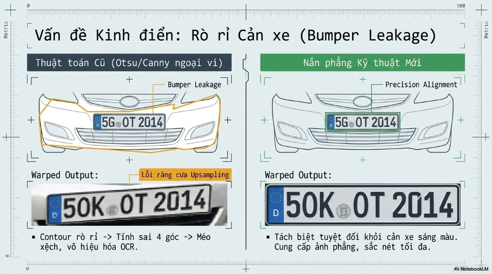
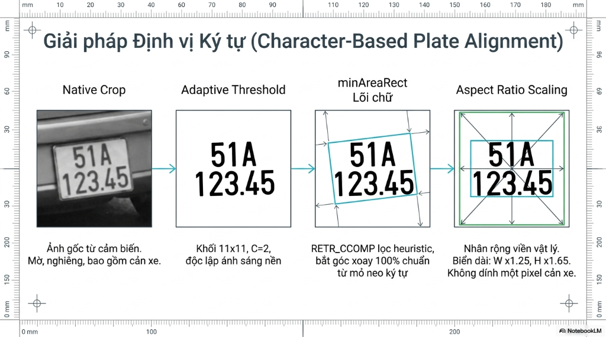

Báo cáo kiến trúc công nghệ chuyên sâu, custom C++/CUDA plugin dslaplacian và kết quả đánh giá thực tế
uridecodebin tự động gán bộ giải mã phần cứng NVDEC để đẩy luồng vào GPU VRAM dưới định dạng NV12.pre-cluster-threshold=0.25.libnvds_infercustom_yolov11_flat.so để phân tích tensor output phi tiêu chuẩn của YOLOv11.human, head, bike, cyclist...width_ratio=0.031, height_ratio=0.037).tracker-width=640, tracker-height=384 để cân bằng tốt nhất giữa độ chính xác và FPS.object_id (Track ID) bất biến cho từng chiếc xe và biển số trong suốt thời gian xuất hiện trên camera.(source_id, object_id).NvDCF
Correlation Filter640 × 384
ResolutionUnique ID
per Source / FrameAuto Clean
on Lost Trackmisc_obj_info[0] trong metadata của đối tượng biển số.minAreaRect bị méo lệch, dẫn đến ảnh crop bị cắt mất góc, mất chữ số, gây hỏng OCR.Bumper Leakage
Dính viền cản xeLệch BBox
Mất góc / Mất chữInterpolation Blur
Mờ răng cưaFail OCR
Lọc sai độ nét
char_est:

border_check loại bỏ quad chạm viền ảnh $\ge 3$ góc và valid_plate_quad kiểm soát aspect ratio hợp lệ từ 1.0 đến 7.5.atomicMin/atomicMax tìm giá trị Min/Max của pixel để phục vụ contrast stretch.Warp (VRAM) ➔ Stretch (VRAM) ➔ Blur (VRAM) ➔ Laplacian (VRAM)
Nghẽn băng thông do đọc ghi Global Memory liên tụcKernel 1: Warp & Min/Max ➔ Kernel 2: Stretch + Blur + Laplacian (Fused L1 Cache)
Tối ưu hóa phần cứng, tiết kiệm 70% băng thông VRAMlpr_ocr.20240305.onnx, tối ưu hóa sang TensorRT FP16, batch-size = 8._ (phân tách dòng)._ làm dấu phân cách dòng khi gặp biển vuông 2 dòng (ví dụ: input biển vuông "51A / 12345" -> output: "51A_12345").| Tiêu chí | LPRNet (Cũ) | New OCR 2024 (Hiện tại) |
|---|---|---|
| Đầu vào | 3×48×96 (RGB) | 3×64×128 (BGR) |
| Xử lý biển vuông | Cắt dòng top/bot phức tạp | Tự nhận diện qua token "_" |
| Biển VN hợp lệ | 88.5% | 100% |
| Events phát (15 video) | 131 | 169 (+29%) |
[T=15, C=37]:
argmax tại mỗi time step._ phân dòng thành dấu gạch ngang -.[tỉnh][chữ series][số suffix].0➔D, 1➔K ở vị trí mã tỉnh) hoặc chữ sang số (vd: B➔8, S➔5 ở phần số).sgie3.py. locked_plate_ids, probe sẽ đổi tạm thời class_id của object từ 13 sang 99 ở các frame trung gian. Do SGIE3 chỉ xử lý class 13, nó sẽ tự động bỏ qua đối tượng này.0 thừa vào cuối biển số của LPRNet (ví dụ: LPRNet ra 29C10052 thay vì 29C1052).sync=false): đạt throughput cực cao **~384 FPS** cho 1 nguồn video.169
LPRNet chỉ đạt 131 (+29%)0 %
LPRNet lỗi 10.7%~384 FPS
Chế độ Production sync=false~12.8 ×
Nhanh hơn thời gian thựcdslaplacian với thuật toán định vị ký tự giải quyết triệt để vấn đề rò rỉ cản xe (Bumper Leakage) và mờ ảnh do resize.Tối ưu hóa pipeline xử lý song song 32+ luồng RTSP camera cùng lúc.
Đồng bộ dữ liệu thời gian thực gửi về Dashboard tập trung qua Kafka.
Nghiên cứu mô hình nhận diện chữ trực tiếp trên YOLOv11/YOLOv12.